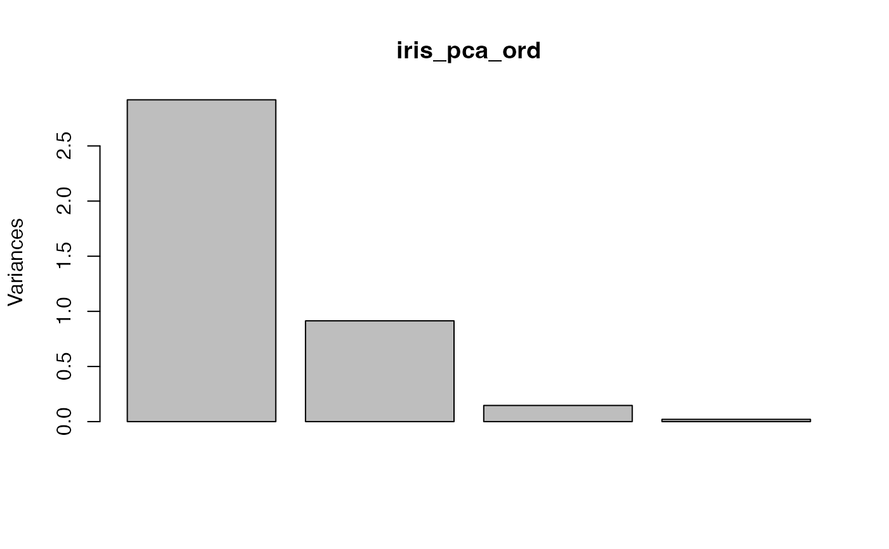
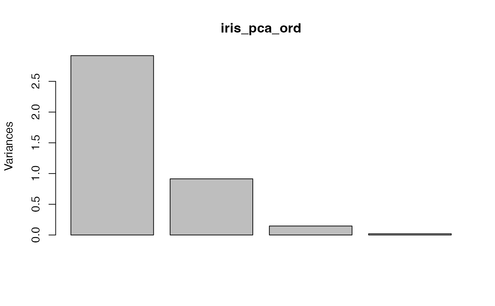
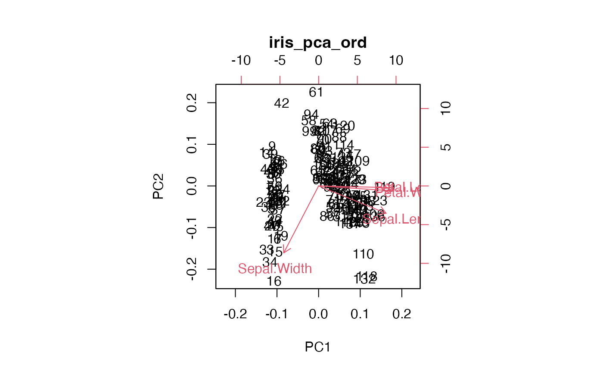
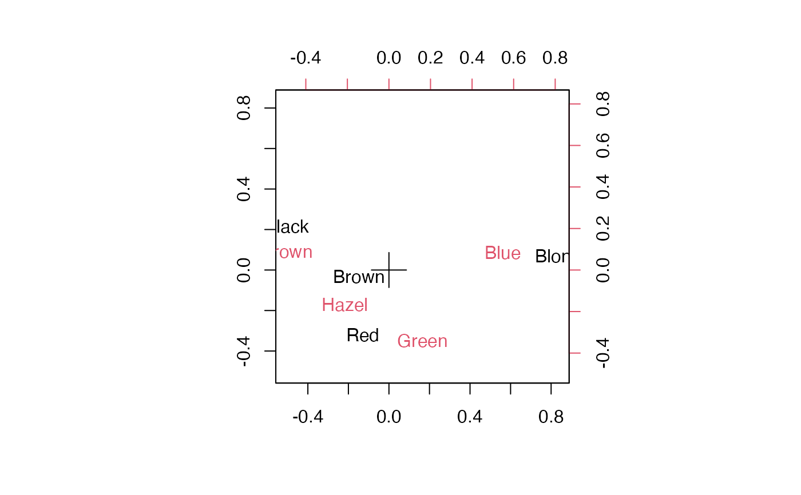
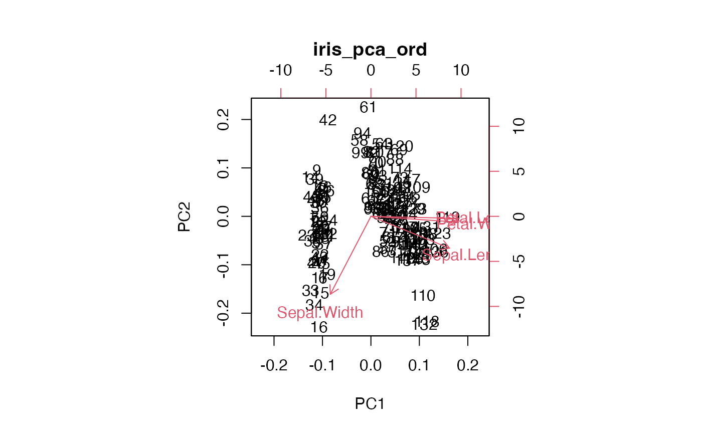
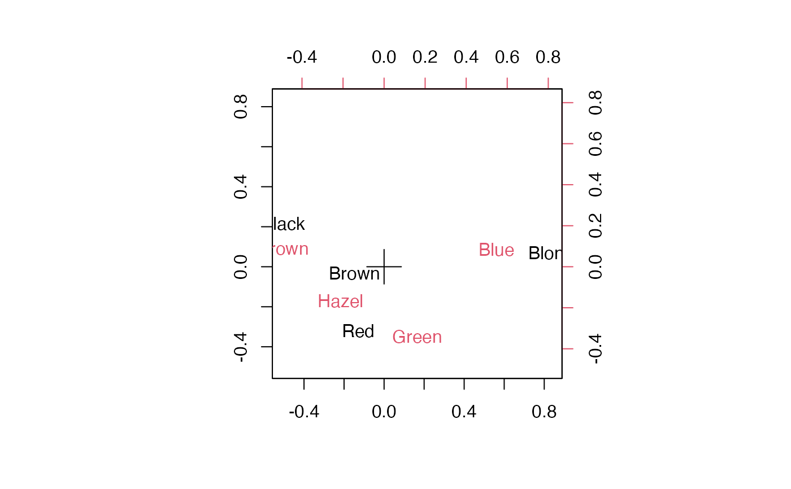

Adapt stats 'prcomp' and 'princomp' methods for plot(),
screeplot(), and biplot() generics to 'tbl_ord' objects.
Usage
# S3 method for class 'tbl_ord'
plot(x, main = deparse(substitute(x)), ...)
# S3 method for class 'tbl_ord'
screeplot(x, main = deparse(substitute(x)), ...)
# S3 method for class 'tbl_ord'
biplot(x, main = deparse(substitute(x)), ...)Details
These methods defer to any plot() and biplot() methods for the original,
underlying model classes of 'tbl_ord' objects. If none are found: Following
the examples of stats::plot.prcomp() and stats::plot.princomp(),
plot.tbl_ord() calls on stats::screeplot() to produce a scree plot of the
decomposition of variance in the singular value decomposition. Similarly
following stats::biplot.prcomp() and stats::biplot.princomp(),
biplot.tbl_ord() produces a biplot of both rows and columns, using text
labels when available and markers otherwise, with rows and columns
distinguished by color and no additional annotation (e.g. vectors). The
biplot confers inertia according to get_conference() unless the proportions
do not sum to 1, in which case it produces a symmetric biplot (inertia
conferred equally to rows and columns).
Examples
# note: behavior depends on installed packages with class-specific methods
# class 'prcomp'
iris_pca <- prcomp(iris[, -5L], scale = TRUE)
iris_pca_ord <- as_tbl_ord(iris_pca)
plot(iris_pca)
 plot(iris_pca_ord)

screeplot(iris_pca)
screeplot(iris_pca_ord)
biplot(iris_pca)
plot(iris_pca_ord)

screeplot(iris_pca)
screeplot(iris_pca_ord)
biplot(iris_pca)
 biplot(iris_pca_ord)

# class 'correspondence'
haireye_ca <- MASS::corresp(rowSums(HairEyeColor, dims = 2L), nf = 2L)
haireye_ca_ord <- as_tbl_ord(haireye_ca)
plot(haireye_ca)

plot(haireye_ca_ord)
biplot(iris_pca_ord)

# class 'correspondence'
haireye_ca <- MASS::corresp(rowSums(HairEyeColor, dims = 2L), nf = 2L)
haireye_ca_ord <- as_tbl_ord(haireye_ca)
plot(haireye_ca)

plot(haireye_ca_ord)
 # no `screeplot()` method for class 'correspondence'
screeplot(haireye_ca_ord)
# no `screeplot()` method for class 'correspondence'
screeplot(haireye_ca_ord)
 biplot(haireye_ca)
biplot(haireye_ca)
 biplot(haireye_ca_ord)
biplot(haireye_ca_ord)